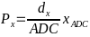
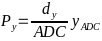
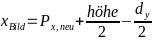
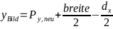
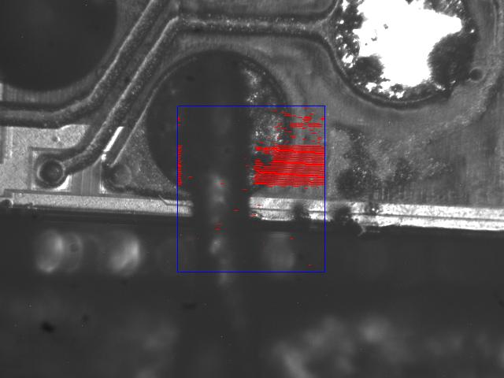
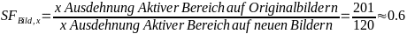
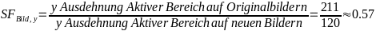
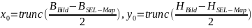

Figure
2:
micfs35.dat.txt_overlay.png
Der Datensatz besteht aus Bildern und Textdateien, die in mehrere Scanbereiche aufgeteilt sind.
Die Bilder sind nach dem Schema "Jenamicro18_fs<Spalte><Zeile>.tif" (z.B. Jenamicro18_fs12.tif) benannt. Sie bestehen aus einer Serie von Mikroskopbildern, die die zu den jeweiligen Scanbereichen korrespondieren.
Die Textdateien enthalten Koordinaten, die mit Ionen beschossen wurden. Das Format beinhaltet:
a. Die ersten 6 Zeilen bilden die Kopfzeile (Metadaten zum Experiment).
b. Jede Zeile repräsentiert die spezifischen Koordinaten, die beschossen werden, mit 5 Werten:
x-Koordinate in Bezug auf den entsprechenden Scanbereich basierend auf einem 12-Bit-ADC (abweichend von den Bildkoordinaten).
y-Koordinate in Bezug auf den entsprechenden Scanbereich basierend auf einem 12-Bit-ADC (abweichend von den Bildkoordinaten).
LatchUp (0 - kein SEL, 4 - SEL).
Möglicher ADC-Eingang (in diesem Fall nicht zutreffend).
Der Channeltron-Wert (entspricht der Anzahl der emittierten Elektronen).
Die Daten sind auf 25 Scanbereiche verteilt, die jeweils ein Bild und eine *.txt-Datei enthalten.
Für die Bilder mit 5-facher Vergrößerung sind folgende Dimensionsinformationen bereitgetellt:
x: 597px = 900µm
y: 461px = 700µm
Dimensionsinformationen zur Ionenablenkung:
x = 9*33,7µm = 303,3µm
y = 9*35,7µm = 321,3µm
Diese Übersicht soll ein besseres Verständnis der Datenstruktur für die Mikroskopbilder und Textdateien vermitteln, die nach den oben aufgeführten Spezifikationen organisiert sind und so eine effiziente Nutzung und Analyse der Daten ermöglichen.
Der Datensatz besteht aus Bildern und csv-Dateien, die jeweils einen von drei, sich überlappende, Vertikalen Streifen darstellen. Diese Daten sind, im Gegensatz zu den GSI Daten, schon aufeinander abgestimmt.
Um die bereitgestellten *.dat Dateien in Textdateien umzuwandeln, wird das Perl-Skript "extract_dat2txt.pl" verwendet, das von GSI bereitgestellt wurde. Die Benutzung des Skripts erfolgt in einem ordnungsgemäß definierten Verzeichnis, um die ordnungsgemäße Funktion des Programms zu gewährleisten.
Die Ordnerstruktur für die GSI Daten ist wie folgt:
1. Hauptordner, in dem sich die Pythonskripte befinden:
fun3.py
LatchUpMap_v2_2.py
EmptyLatchUpMap_v0_0.py
2. Unterordner innerhalb des Hauptordners:
a. "pics" für die Bilder:
Mikroskopbilder (Beispielsweise von Elektronikbauteilen oder Halbleitern)
b. "docs" für die umgewandelten Textdateien:
Hier werden die Textdateien gespeichert, die aus den ursprünglichen *.dat Dateien mithilfe von "extract_dat2txt.pl" generiert wurden.
c. “img” fuer die fertigen Bilder:
Hier werden die Ergebnisse des Skriptes LatchUpMap_v2_2.py gespeichert.
Die Ordnerstruktur für die LUNTE Daten ist wie folgt:
1. Hauptordner, in dem sich die Pythonskripte befinden:
binningFun_v0_6.py
CombineCSV.py
pixelBinning_v0-6.py
2. Unterordner innerhalb des Hauptordners:
a. “csv” fuer die LUNTE csv-Daten
b. “panos” furdie panoramas in original groesse
c. “pics” fur die Bilder aus den LUNTE Daten
Um die volle Funktionsfähigkeit des Programms zu garantieren, ist es wichtig, diese Ordnerstruktur strikt einzuhalten. Durch die richtige Organisation können die verschiedenen Skripte und Dateien effizient verarbeitet und genutzt werden, um den gewünschten Workflow zu ermöglichen.
Um die SEL auf die Mikroskopbilder zu projezieren müssen die Koordinaten eingelesen und sortiert werden. Dazu werden folgende Schritte ausgeführt:
Es werden zwei separate Listen für die in den Verzeichnissen "docs" und "pics" gefundenen relevanten Dokumente zu erstellen. Relevante Dokumente haben die Dateiendungen ".dat.txt" oder ".tif". Die Dateien im Unterordner "Latchups" sind davon ausgenommen und werden bei diesem Schritt nicht berücksichtigt.
Für jedes in Schritt 1 identifizierte relevante Dokument im Verzeichnis "docs" wird folgender Ablauf abgearbeitet:
a) Zeilenweise einlesen: Das Dokument wird zeilenweise eingelesen. Jede Zeile wird anschließend einzeln verarbeitet.
b) Header löschen: Der Header, also die ersten 6 Zeilen mit Metadaten, wird in diesem Schritt entfernt.
c) Zeile in 5 Elemente aufteilen: Die verbleibenden Zeilen des Dokuments werden nun entsprechend dem Aufbau der Daten in fünf separate Elemente aufgeteilt. Damit wird eine Struktur geschaffen, die es ermöglicht, die Informationen später leichter weiterzuverarbeiten.
d) Prüfung und Speicherung von Latchups: In diesem Schritt wird überprüft, ob ein Single Event Latchup (SEL) für die jeweilige Zeile vorliegt. Wenn dies der Fall ist, wird die Zeile in der Liste "LatchUps" gespeichert. Diese Liste dient als Sammlung der Latchup-Events, die in den verschiedenen Dokumenten gefunden wurden.
Zusammengefasst besteht der Prozess also aus der Erstellung zweier Listen mit relevanten Dokumenten und der Durchführung bestimmter Operationen wie dem Einlesen, Löschen von Headern und Aufteilung von Zeilen für jedes relevante Dokument im Verzeichnis "docs". Ziel ist es, Latchup-Events extrahieren und in einer separaten Liste zur weiterverarbeitung zu speichern.
(Verarbeitetes und unverarb. Dokument in Anhang)
Nachdem die SEL aus den Textdateien extrahiert wurden, können sie nun auf die Mikroskopbilder projiziert werden. Dazu werden folgende Schritte ausgeführt:
Finden des korrespondierenden Bildes:
Basierend auf dem Namen des *.dat.txt Dokuments wird das passende Bild ausgewählt.
Öffnen des Bildes mit OpenCV:
Nachdem das korrespondierende Bild gefunden wurde, wird es mit der OpenCV-Bibliothek geöffnet. OpenCV ermöglicht die Berechnung der Dimensionen des Bildes und konvertiert es in ein Numpy-Array zur weiteren Verarbeitung.
Berechnung der SEL-Koordinaten:
Für jeden SEL im Datensatz werden die genauen Koordinaten im Bild berechnet. Dies bezieht sich auf den Scanbereich des Bildes und liefert die Positionsdaten für die anstehenden Transformationen. Dazu werden die folgenden Formeln verwendet:
  |
P – Position im Scanbereich in Pixeln d – Ablenkung xADC/yADC – Position im Scanbereich bezogen auf ADC ADC – 12bit (4096) |
Umrechnung der Positionen in Bildkoordinaten:
Die zuvor berechneten Positionen werden nun in Bildkoordinaten umgerechnet. Dazu werden folgende Schritte durchgeführt:
Spiegelung an der Y-Achse: Die Koordinaten werden so angepasst, dass sie symmetrisch bezüglich der Y-Achse angeordnet sind.
Drehung um 90° gegen den Uhrzeigersinn: Der Koordinatenvektor wird um 90° gegen den Uhrzeigersinn gedreht.
Koordinatentransformation: Transformation von Scan-Bereich-Koordinaten in Bildkoordinaten
 
Ändern der Pixel im Numpy-Array:
Innerhalb des Bildes (Numpy-Array) werden die Pixelwerte für SEL auf [0, 0, 255] (rot) gesetzt. Optional können auch die Pixelwerte für den Rahmen auf [255, 0, 0] (blau) gesetzt werden um die Analyse zu vereinfachen.
Speichern des modifizierten Bildes:
Schließlich wird das veränderte Bild mithilfe von OpenCV im Ordner "Latchups" gespeichert. Dadurch ist das Bild für die spätere Analyse und Verwendung verfügbar.

Figure
1:
Jenamicro18_fs35_LatchUpMap.png
Hier fällt auf, dass in Bereichen, die eigentlich komplett empfindlich sein sollten, Zeilen ausbilden. Das ist darauf zurückzuführen, dass die SEL-Daten an die größe der Bilder angepasst werden. Die bei dem Experiment abgetasteten Zeilen sind nicht horizontal, sondern haben eine kleine vertikale Komponente. Um diesem Effekt entgegenzuwirken müssen die Koordinaten durch die Anzahl der leeren Zeilen zwischen zwei besetzten Zeilen (34) geteilt werden. Dafür wurde ein neuer Ansatz entwickelt. Die ersten zwei Schritte sind identisch zum oben beschriebenen Vorgehen. Es ist also ein zu den SEL-Daten passendes Bild geöffnet.
Bildgröße ändern:
Um die größe des Bildes anpassen zu können muss zuerst ein Skalierungsfaktor (SF) berechnet werden. Dieser wird aus der Größe des aktiven Bereichs auf den Originalbildern und der Größe des aktiven Bereichs auf den neuen Bildern berechnet.


Mit diesen Faktoren kann nun die neue Größe des Bildes berechnet werden und das Bild mit Hilfe der Funktion cv2.resize() verkleinert. Als Interpolation Methode wird hierbei cv2.INTER_AREA verwendet, da diese die bevorzugte Methode zum verkleinern von Bildern ist. {https://docs.opencv.org/, abgerufen: 15.08.2023}
Erstellen einer SEL-Map:
Als Grundlage dient ein Array mit den Dimensionen der Aktiven Fläche (120x120 pixel). Das Array wird mit schwarzen Pixeln gefüllt und ein blauer Rand wird eingefügt.
Um die SEL in das Array einzufügen müssen die, aus dem Text Dokument extrahierten, Koordinaten an die Dimensionen des neuen Arrays angepasst werden. Dies erfolgt durch eine Division mit dem Skalierungsfaktor 34. Die Daten sind im Bezug auf die Bilder gespiegelt und verschoben. Um sie kombinierbar zu machen müssen die Daten also noch an der y-Achse gepiegelt werden und um 90° in mathematisch positve Richtung gedreht werden.
Mit den angepassten Koordinaten können die SEL als rote pixel in das Array eingefügt werden.
Zusammenfügen von SEL-Map und Bildern
Die Zentren beider Bilder liegen übereinander. Um die Bilder zusammenfügen zu können müss also zuerst ein Versatz in x und y Richtung berechnet werden.
 |
B – Breite H – Höhe x0 , y0 – Versatz |
Nun erfolgt eine Iteration durch die Elemente der SEL Map. Wenn das Pixel nicht schwarz ist, wird das correspondierende Pixel im Bild mit dem Wert überschrieben.
Speichern des modifizierten Bildes:
Schließlich wird das veränderte Bild mithilfe von OpenCV im Ordner "img" gespeichert. Dadurch ist das Bild für die spätere Analyse und Verwendung verfügbar.
Figure
2:
micfs35.dat.txt_overlay.png
Bei diesen Bildern kommt es nun nicht mehr zur Zeilenbildung wie beim vorherigen Ansatz.